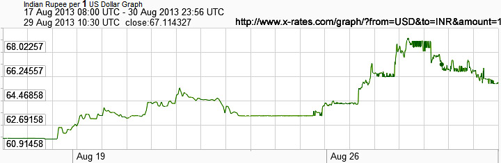

|
Table of Contents
|
Method
I am against personal profiteering through Mundane Astrology, because money-making through Forex or bullion or stock trading is loot of national wealth earned by the whole nation without giving any returns through personal toil. But if money begotten through stock market &c is spent on philanthropy projects then it is not bad. It is my personal opinion. Others may differ from me and there is no need to fight. Everyone has a right to have his/her views, and so have I.
But Forex or Bullion price index is the best dataset for studying and testing astrological ideas, because it is the only available CONTINUOUS DATASET. Even rainfall is not a continuous phenomenon. Individual horoscopy provides sporadic events, not continuous SERIES of data to work upon.
Therefore, here is the easiest and most reliable method of Forex Price Forecasting, esp Price of Rupees with respect to major world currencies, esp US Dollar. This method can be extended to Bullion Price Forecasting with slight modifications.
Start the Kundalee software in its DEFAULT mode. There are two combo boxes at top. In the right hand side combo, select "Medini" folder. Then, in the left top combo select "MeruWorldChart". In the bottom large green text box, default entry is "0" which will open Meshaarambha Chart if SHOW button is clicked. Never touch day or month boxes in Medini mode, change only "Year" in left side. Count the approximate number of solar days from mid April and input that number in the bottom text box by replacing "0" with the number of solar days from Mesha Samkraanti. This number should be in units of half degrees of Sun's longitudes, 360 degrees per year. Then, click SHOW button on right top. D1 chart in detail on left and same chart on World Map on right will open. Half degree of Sun is approximately equal to half a day. In the map, you will find the date and time of chart at bottom right in red. If the timing is not as per your wish, change the half-degree input in initial data input form and click SHOW button again. For instance, in 2013 AD if input is 105.5 (degrees of Sun) then the date on map will be 2nd Aug 2013, 7:52:33.75 Kenya Time (+3 hrs from Greenwich). This chart will be effective or nearly half a day, till Sun reaches next Half Day (106 degrees). Now, find the bhaava in which India (esp Mumbai) falls, and also find out the bhaava in which most of USA falls. The relative good or bad prospects of these houses in D1 and D2 will show the relative weights of currencies of these nations. This method is well tested (for 16 years).
Half Day Onset Chart is influenced by Meshaarambha Chart, previous Solar Samkraanti Chart, solar Nakshatra Onset Chart, eclipse chart, etc. If all these charts are viewed, exact forecasting can be made, but judging and comparing so many charts is difficult. Analyzing only the Half-Day chart is easy.
Default mode of Kundalee is Suryasiddhaantic. If Drik Mode is selected, this method will fail to work. Due to copyright issues, Drik mode in Kundalee is deactivated at present. It will soon be activated.
Case Study : Daily Price Indices (US dollar vs INR rupee)
Following picture is the screenshot from this website :
http://www.oanda.com/currency/historical-rates/
17 July 2013
For making Medini mode's MeruWorldChart for 17 Jul 2013, type 90 in bottom large green box on input data page of Kundalee software, without any other character than 90, which means Nirayana Sun's entry into 90 degrees longitude. Do not change any other box, only the left side year box should have year 2013. 17 July 2013 shows steep fall in rupee with respect to US dollar. In Meru chart's D-1, India falls in both 2H and 3H. 2L Venus is well placed in 5H but with only 14' aspect on 2H where 8L Ketu is harming 2H and its relative 11L Rahu in 8H is also aspecting 2H fully very maliciously. 3L Mercury is svagrihi in 3H but it is 100% malefic due to being 3L + 6L and having two bitter enemies with it Mars and Jupiter. Bitter enmity means Mars and Jupiter will give only bad portions of their total fruits to 3H. But USA also falls in 6H with only western and NW parts in 5H. 6H is ruled by malefic Mercury with bitter enemies, but Mercury is svagrihi too, while Mumbai falls in 2H and not in 3H. All these factors make dollar slightly better than rupee. Surya Kundali (SK) has India's Vrisha rasi with 5L Ketu and lord Venus well placed in 2H, but Chandra Kundali (CK) wipes out all benefits of SK because in CK Vrisha rasi is in 8H with lord Venus in 11H and 2L Ketu in 8H making the house of wealth bad too.
D2 accentuates this situatin further against India and in favour of USA : 6H has lesser portion of USA and 5H occupies larger part of USA in D2 than in D1, while D2 now shares overwhelming part of India. 2L Venus is again well placed, but now in enemy's sign and with same 14' aspect on 2H, while both malefic nodes being 11L and 8H are now seated in 2H. D2's Moon sits in lagna which makes Lagna Kundali (LK) same as Chandra Kundali (CK) making the Surya Kundali (SK) useless in SC (Sudarshana Chakra). Therefore, D2's SC is bad for India in comparison to USA.
The combined effects of D1 and D2 make rupee weaker than dollar, resulting in downfall of India's net wealth.
Kundalee's World Chart is at Kenya's Time (+3 hrs from GMT). But NYSE and BSE have different time systems. Hence, while applying the above method, actual timings must be borne in mind, as well as the holidays of stock exchanges.
31 July 2013
31 July 2013 shows steep rise in rupee price. Replace 90 wity 103.5 in input box of Kundalee, you will get World chart for nearly 5:30 am Kenya time. D1 shows India in 11H and 12H. 11H has 2L Moon in friendly sign in 1H which is a yoga giver for wealth. Lord Mars is a malefic but with zero aspect on 11H, hence Moon is strongest factor for 11H. Ketu is 6L there but yoga giver Moon suppresses all other factors because according to BPHS lunar yogas predominates. 12L Venus is lord of 4H and 5H too. It is bad for 4H or 5H to have their lords as 12L too, but it is good for 12H if its lord is a benefic yoga giver as 4L + 5L. Surya Kundali has India's Vrisha rasi in 11H whose lord sits in 2H which is a yoga giver. In Chandra Kundali, India sits in 2H whose lord sits in 5H. Hence all factors point towards great financial gains for India.
In D2 most of India falls in 9H with 11L Moon there in its Moola-trikona. Exalted Rahu and neecha Ketu cancel each other's strengths but both are malefics. Thus, 9H has malefic planets but the lord is benefic : (L is 2L too and sits in 5H which is very good for finances. Venus is very good in SK and Ck of D2 as well.
On the whole combined effects of D1 and D2 are highly in favour of India. In D1 USA was mostly in 3H with Venus there : Venus as 4L+5L is good but it is 12L too, hence not very good in 3H where Venus is considered to be malefic. Lord Sun has no aspect on 3H. In D2 USA was mostly in 12H with kendraadhipati Jupiter there and lord Sun neecha in 2H. Therefore rupee must rise abruptly in comparison to dollar.
Rupee's Fall in August - September 2013
Use MeruWorldChart in Medini Folder of Kundalee Software to make chart of World Map. Type multiples of 13.3333333333333333333 in bottom large green text box of input text box to make Nakshatra entry charts, and then compare the houses in which India and USA dwell in order to compare relative strengths of Rupee (INR) and dollar (USD). In spite of Venus being svagrihi after Sep 5, 2013, real strengthening of rupee on a phenomenal scale will occure after Sep 27, 2013 due to strong Nakshatra entry chart.
EXAMPLES :
Sun's Entry into 10th Nakshatra Maghaa : Aug 17
Nirayana Sun entered into Maghaa (or Simha/Leo sign) on 17th Aug 2013 at 14:23:57 PM in Prithvi Chakra. For making Prithvi-Chakra, start Kundalee Software, select "Medini" folder in top right combo, and thereafter select "MeruWorldChart" in top left combo box. Then, ensure that the year on left side is 2013. In the bottom large green text box, replace the default "0" (for Sun's entry into Mesha or Ashvini) with 120 (for Sun's entry into 120 degrees or Leo or Maghaa). Only numerals are allowed, representing degrees in decimal system. Then, click "SHOW" button, you will get the D-1 chart. For making divisional charts, esp D2 and D9 which are often needed, click "MAIN" on Swichboard and then enter "2" for D2 or 9 for D9 in Shodashavarga text box and then click the SHODASHAVARGA button. You will get the divisional chart.
The Maghaa Chart has most of India, esp Mumbai, in 8H with its lord debilitated (neecha) Venus in 12H as 1L + 8L. Nedcha Venus in 12H is VRY (vipareet raja yoga), while 8L in 12H is also VRY. But here we face a problematic situation : double VRY !! Texts do not explain what to infer in such situations. In mathematics during multiplication, "minus minus" becomes "plus". But one more minus will again make it minus. Similarly, neecha or trikesha in trika house makes VRY, but if 8L in 12H is VRY then debilitation of this VRY cancels the VRY. This hypothesis is logical, and is supported by empirical evidenmce too. In Maghaa Chart of World, we find USA in 11H of income with its lord Sun in mools-trikona in 10H, while India facing poorly due to residing in 8H with no VRY. Since relative weight of USA and India in D-1 is too much, there is no need to see D-2 or D-9 because D-1 has far greater vimshopak strength. Moreover, in this case D2 is in favour of India while D9 is in favour of USA, cancelling each other, making D-1 the final arbiter. Therefore, USA currency must be far stronger than India's during Sun's residence in Maghaa : 17th Aug to 31th Aug (Sep zero) 10:51:48 IST.
Sun's Entry into 11th Nakshatra : Aug 31
In the above manner, enter 133.33333333333333333333333 and you will get the next (11th) Nakshatra Chart, in which India is in 9H with lord Venus in lagna but neecha while USA's lies in lagna and 12H with 12L Sun in moolatrikona but in 12H with lagnesha combust Mercury. Neither India nor USA is good, hence relative strength of Rupee viv-a-vis dollar will not be as bad as dusing Maghaa. D2 and D9 are moderately in favour of USA while D1 has exalted Saturn benevolent for India.
Sun's Entry into 12th Nakshatra : Sep 14
This chart should be made by entering 146.6666666666666666666667 in input form's large green box at bottom. This chart has excellent USA with lord Sun svagrihi in 3H while India's lord in Moolatrikona in 4H but India itself in 12H. Hence dollar will fare better. But fast friend moolatrikona and yoga-giver Mercury with Venus tilts the balance in India's favour.
Sun's Entry into 13th Nakshatra (Hasta) : Sep 27
Sun's entry into 160 degrees. It has USA in 7H with lord Sun in 8H, and India mostly in 4H with lord Venus svagrihi in 9H with exalted Saturn neutral to Venus, and South India in 3H with lord Mars neecha in 6H having VRY. Hence rupee will rise phenomally with respect to dollar.
Best value of INR on Oct 6 :
[ Comment added on Oct 8 : ] Best value of INR (rupee) with respect to USD (dollar) was on Oct 6, 2013 as predicted by me at two yahoo forums VAF (VedicAstrologyForum) and JR ( http://groups.yahoo.com/neo/groups/Jyotish_Remedies/conversations/messages/110977 ) :
World Chart for Desired Moment : Sep 29, 2013
Meshaarambha Chart of Mid-April is made by entering zero degree in the large green text box in the input form of Kundalee Software. In 2013 AD chart (D-1), most of USA lies in 9H (9th house), its lord Sun being exalted in 4H with highly benefic Mars and malefic Venus. India, esp Mumbai, lies at the border of 5H and 6H, lords of both Mars and Venus being combust with Sun. Hence, Sun overlords India too. Sun is bitter enemy of 6H and neutral to 5H. Hence, USA is far better to India this year. D2 is also in favour of USA.
By replacing zero with 120 degrees, Leo entry and Nakshatra entry chart can be made, starting on 17 Aug 2013, in which India languishes in 8H mostly with Venus as 1L + 8L neecha in 12H. Neecha or 8L in 12H makes VRY, but here we find double debilitation, hence neecha in 12H making VRY is cancelled by 8L status. Sun as 11L is malefic for other respects but not for Income because it is in moola-trikona in Leo in 10H with 9L + 12L Mercury being combust, thus making Sun lord of 9H too. Therefore, USA in Sun's sign is far better to Venus in 12H.
This Nakshatra entry chart gives clues about Timing too in the left side of World Map. Sun's time is 27th Aug, 23:40:28 Kenya Time while Venus's Time is 31 Aug 6:46:28. 11H had its time on 28th August which saw phenomenal fall in INR (Indian rupee).
Now, let us find the way to make World Chart for Desired Monent on World Map. Only version 6.9.6 and above of Kundalee Software can do so, and even that requires some efforts. Sun entered into 120 degrees on Aug 17. We have to check Medini Chart at the desired moment for following graph in which INR strengthened by about 3% on 29 Aug morning between 8:50 and 9 AM IST, mean time being 8:55 AM. Through repeated trials, Sun's longitude at 131.324 gives this timing. In the chart produced for this longitude of Sun entered into data input form's large green box, we find KSY (Kaala Sarpa Yoga) which weakens good yogas and accentuates bad yogas. Rahu with neutral 5' aspect on Sun and Ketu with bitter enmical 35' aspect on Sun makes the effect of KSY on Sun worse than that on Venus which has neutral 1' aspect of Ketu and fast friendly 0' aspect of Rahu. Besides, most of USA including NYSE passes into 2H with lord Mercury, mercury being 2L + 11L but combust in strong Sun which is enmical to Mercury, while india's lord Venus is weak, being neecha in 2H but moolatrikona Moon sits in 10H of India. Thus, India fares better than USA. Bhaavachalita's motion ("chalana") on map gives minute to minute performance of exchange rates. Exchange rates show relative wealth of nations.
World Chart for Sun's Residence in Maghaa in 2013
Sun's residence in Maghaa Nakshatra in 2013 AD was from 8:54 UTC 17 Aug to 5:22 UTC 31 Aug.
The following picture is a screenshot for INR:USD graph for 8:00 on 17 Aug, i.e., 54 minutes before Maghaa started, to 23:56 on 30 Aug which is 5 hr 26 min before Maghaa ended. Analyze this graph with Kundalee Software, by entering 120.0 in the bottom text box of data input page of Kundalee. After clicking "SHOW" button, you will get the Grah-spashta page. On it there is a small button "Chakra" ("Chalita" in English). Click it to find circular chart. Move the mouse to find the degree on zodiac at which difference between Sun's (USA) and India's (Venus) aspect is maximum. Taking 360 degrees to be equal to Maghaa's duration of 13days:22hr:41min:15sec or 13.9453 days this year which is 25.815 degrees per day (it is not Moon's daily motion), convert the degrees of maximum Sun:Venus aspect and you will find the time of highest value of rupee for one dollar as shown in following graph. This method works in three levels of Medini charts : annual, Nakshatra and Half-Degree. The degree at which Sun's aspect is highest with respect to that of Venus is 303.3 degrees, dividing it with 25.815 we get 11.7489 days from the onset of Maghaa which was Aug 17.370833, hence the time of max value of rupee with respect to dollar was Aug 29.11976 or Aug 29, 2:52 UTC. Sun's aspect was 56' and Venus had zero aspect. This time was within the region of weakest value of rupee. The duration few hours before it was for Sun's highest 100% aspect strengthening the dollar, which was preceded by highest aspect of most malefic and enmical combination of Mars plus Jupiter in 9H at this part of zodiac. This whole region formed the highest part of graph representing the weakest value of INR vis-a-vis USD.
Fine tuning of this method is carried by half day Meru chart, and the final touches are given by current charts already explained in the precdeding sub-title in this article.
Use principles of BPHS to make these charts with greater details, using Sudarshana Chakra and D2 + D9 for more accuracy. I have outlined only the method here in short.
Forex Chart for one month : 30 Aug to 29 Sep 2013
Source of GRAPHS : http://www.x-rates.com/graph/?from=USD&to=INR&amount=1
Forex Charts
Forex Chart for 28-Aug to 30-Oct, 2013
I had predicted that Rupee will start improving after 5th Sep 2013, and then I predicted that Rupee will gain its best value by Oct 6 (i.e., will not improve further).
After long Stability, Rupee Improves Briefly
After 25th Mar 2014, Indian Rupee strengthened against US Dollar slightly after many months of stability (after Oct 6, 2013, it was almost stable). But PD (third level, lasting 2.5 degrees of Sun or approximately 2.5 days for each PD chart) shows this improvement will be due to better D2 rather than D1 and will stop by April 1, 2014. Not much strengthening in Rupee is expected in this week, and after April 1, Rupee will fall.
The above forecast was posted on 27th Mar, 2014, which can be checked through the History Tab at bottom right of this page. Here is the actual graph for that period taken from Website' which shows Apr-1 2014 was the critical point after which improvement in rupee stopped and fall started, till Apr 23, 2014 (blue line in the picture below). I could not devote time to further analysis due to preoccupations in writing articles and elections.

-VJ